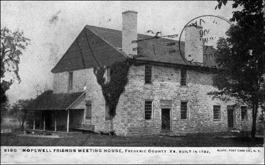

French Family Association
The Official Website of the Surname French

Hopewell Friends Meeting House, Frederic County, VA, built in 1732
Chart #192, Henry French, 1765
Frederick Co., VA
Jackson, Jackson Co., OH
This page was updated by Mara French on 11/17/10. Send any corrections or additions to this chart to Stuart French. Or, if it is in regards to just this page, email marafrench@mindspring.com. Revisions: 2009.
Contents
Chart #192 Contributed by Stuart French, email Stuart French.
This chart contains 157 members of the French family as of 15 Apr 2009.
DNA Tests for Henry French, Group 11
Researchers have thought for some time that Henry was related to the John French of Giles Co., VA; however, two individuals from John French’s descendants (FFA Chart #12) took the DNA test and they are in DNA Test Group 9, unrelated to Henry French.
Index of Stuart French’s Chart
First Generation
1.1 Henry French was born in 16 May 1765 in Frederick Co., VA [3] or just across the river in Hagerstown, Washington Co., MD [4], or in England as stated in his son’s entry (Henry Smith French) of the 1880 census, d. 1843 in Jackson Co., OH. He m1. Abigail Anderson of Frederick Co., VA, on 11 May 1790 [5]. She was b. 6 Mar 1773 in Richmond Co or Henrico Co, VA, and d. in 1840 in Jackson Co., OH.
Wills of Frederick Co., VA 1795-1816; Will Book 8, 1804-1810 lists Abraham Anderson as the father of Abigail Anderson. The will of Abraham Anderson of Frederick Co., VA 16 Nov 1805/6 Jan 1806 names his heirs, including his wife Sarah and their children Frances, Rhodia, Sarah, Abraham Jr., Thesby, Abigail, Richard, and Eliakim. This family moved to Jackson Co., OH. This same information comes from the 1730-1830 Settlement & First Families of Back Creek Valley in Frederick Co., VA by Wilmer L. Kerns. Abigail’s parents were Abraham and Sarah Anderson, and her siblings were Frances, Rhodia (Rhody), Sarah, Abraham, Thesby, Richard, and Eliakim. Abigail Anderson was b. 6 Mar 1773 in Richmond Co. or Henrico Co., VA and died 1840/1 in Jackson Co., OH. Henry and Abigail (Anderson) French had 5 children.
Second Generation
Children of Henry and Abigail (Anderson) French, 1.1
2.1 Bartemus French, b. 1800 in Giles Co., VA. In the 1860 census of Jackson, Jackson Co., OH, Bartemus is 60, a grocery keeper, living with his wife Elizabeth Cooley (78), Abraham (29), Thomas (14), Bartemus (8), Clarinda Anderson (not a French) (15), and John French (41) who could be his brother. Living very near them in this same census is Sidda A. French (32), Sylvester (12), Henry L. (8), and Franklin S. (6).
2.2 Abraham J. French, b. 30 Nov 1807 in Giles Co., VA. He is in the 1860 census in Jackson, Jackson Co., OH, a grocery keeper, living with his wife Rachel Ridenhour age 47, and their 4 children: William (17), Franklin (13), Permelia (age 11), Abraham (8). Abraham d. 27 Jul 1870 at Portsmouth, Scioto Co., OH. See DNA test on this line.
2.3 Henry Smith French, b. 2 Nov 1809 in Frederick Co., VA. He m. Catherine Dorothea Guigley. Henry is in the 1880 census in Nashville, Davidson Co., TN, age 71, a boarder living with the Hall and Reid families (no direct relationship). The census states that he is a retired merchant, a widower, and that his father was born in England and his mother in Virginia. See DNA test on this line.
2.4 Abigail French, b. ca. 1811.
2.5 John French, b. 1 May 1818 in Jackson Co., OH. John is listed in the 1870 census of Jackson, Jackson Co., OH, age 53, living with his wife Joanna Branscombe, age 51, and their children John W. (17), Henry B. (15), Joan M. (12), Joel S. (10), George W. (8). John is listed in the 1880 census in Jackson, Jackson Co., OH, age 63, living with his wife Joanna Branscombe. He states his father was born in Maryland and his mother in Virginia. He is living with his children George (18), Joseph (21), and Mattie (23). See DNA test on this line.
Documents
Obituary, Bernice Evelyn O’Dell French, 1912-2004
Bernice Evelyn (O'Dell) French, age 91, the oldest lifelong resident of Richmond Dale, passed away peacefully on January 28, 2004. She was born in Richmond Dale, on February 2, 1912, to William Percy and Margaret (Summers) O'Dell. She was married April 10, 1937, to Harold Leo "Dud" French, who died April 23, 1973. Bernice was a graduate of Richmond Dale High School and received a teaching degree from Ohio University. She began her 30-year teaching career in a one-room school house at Anderson Station School. She then taught at Mt. Pleasant (Concord), Vigo, and twenty-four years in Richmond Dale, where she was also principal. She retired in 1972. Bernice was an active member of the Richmond Dale United Methodist Church, where she was a member for 89 years. She also belonged to the Garland Rebekah Lodge, the Ross County Retired Teachers and the Ohio Retired Teachers Associations. Traveling was one of the things that Bernice enjoyed after retirement. Along with Hildred Landrum, Neil Hartman and her sister, Omogene French, she visited every state in the United States. Bernice also enjoyed quilting, baking, reading, flowers and talking about the old times in Richmond Dale. She loved seeing and talking to former students. Above all, she loved spending time with friends and family, especially her four grandchildren. Bernice was predeceased in death by her parents; her husband, Harold L. French; an infant son, Harold Terry French; sisters, Mildred Hirsch and Garnet Oyer; and brothers, Dallas O'Dell and Durward S. O'Dell. She leaves behind two children, Mark L. (Patty Williams) French, of Columbus, and Avis DuGai, of Maumee; and four beloved grandchildren, Angela DuGai (Brian) Gugger, Wendy DuGai, David French and Andrea French. Also surviving are sisters, Omogene French and Marion Leasure; a brother, W. Max (Morgan) O'Dell; and many special nieces and nephews, including, Kaye French (Terry) Cunningham, who was always there when she needed her. Funeral services will be held 10:30 a.m. Monday, February 2, 2004, in Richmond Dale United Methodist Church, with Rev. Ken Martin officiating. Burial will follow in Little Mound Cemetery. Friends may call at Ware Funeral Home from 3 to 6 p.m. Sunday. Those wishing to offer a memorial may consider Richmond Dale United Methodist Church, P.O. Box 117, Richmond Dale, OH 45673.
Chillicothe Gazette, Chillicothe OH; 30 Jan 2003
Are George and Jacob French Related to Henry French?
Ref. [2] and [4] believe that Henry was the son of Jacob French of Maryland of FFA Chart #195. The furthest back we can find is from the 1810 Berkeley Co, VA (now WV) Federal Census. It shows a Jacob French with several children, a George French with several children, a Henry French with several children, and a John French with several children.
From Ref. [5]. Does anyone
"claim" this George FRENCH, Sr. in their line? My ancestor, Samuel, had a brother
named George FRENCH (b. 1 October 1784) and I was wondering if this George
could be their Father? Page 71. Book 15, Page. 363 - 10 April 1772: Know all
men by these presents that I George French Sen. blacksmith in Frederick County,
for and in consideration of one hundred and fifty five pound's thirteen
Shillings paid by Jacob French miller in County aforesaid have bargained and
sold a dirk Bay Horse now in the custody of Lewis Stephen's, a gray Horse in
the possession of Henry French and 2 milk cows and one Calf .
2 year old calf and puter and Iron pots in possession
of Alexander Campbell, a site (sic) of Black Smith Tools,etc . Wit: John Barnes, George French, John Nighewanger, John (JL) Larrick. Recorded: 5 Aug. 1772. FFA response: The line
of George French is FFA Chart #195. In this case, their father Jacob French Sr.
had children born in Berkley Co., WV (formerly Frederick Co., VA): Barbara,
John, George, Henry, Mary, Margaret, and Jacob Jr. Please see DNA Tests
for Group 4 which include Jacob French. Henry French has a different DNA
test from DNA Group 11.
Also closely related is FFA Chart
#186.
Index of Stuart French’s Chart #192
When Stuart regenerates his gedcom
file, these links will no longer go to the correct places. In that case, you’ll
need to go to
http://wc.rootsweb.ancestry.com/cgi-bin/igm.cgi?op=SHOW&db=sfrench798.
This file was generated on 15 Apr 2009.
FRENCH,
Abigail b: ABT 1811
FRENCH, Abraham b: 1833
FRENCH, Abraham Augustus b: Dec 1864 in Jackson Co., OH
d: Jun 1952 in Little Mound Cemetery, Jefferson Twp., Ross Co., OH
FRENCH, Abraham J. b: 30 Nov 1807 in Giles Co., VA d: 27
Jul 1870 in Jackson Twp., Jackson Co., OH
FRENCH, Abraham June b: 16 Feb 1852 in Jackson, Jackson
Co., OH d: 4 Mar 1944 in Chillicothe, Jackson Co., OH
FRENCH, Adaline Augusta b: 16
Nov 1839 in Kanawha Salines, VA (Now WV)
FRENCH, Albert A. b: 1902 d: 6 Dec 1970 in Columbus,
Franklin Co., OH
FRENCH, Albert Louis b: 18 Jul 1897 in Marion Co., KS d:
30 Jan 1978 in Versailles, Morgan Co., MO
FRENCH, Albert Osmond b: 23 Jul 1880 in Sheridan Co., NE
d: 15 Apr 1957 in Kansas City, Wyandotte Co., KS
FRENCH, Alice A. b: Dec 1875 in Carver Co., MN d: AFT
1958
FRENCH, Alida Louise b: 3 Jan
1907 in Onaga, Pottawatomie Co., KS d: 24 Sep 1907 in
Bonner Springs, Wyandotte Co., KS
FRENCH, Anderson H. b: Nov 1840 in Jackson Twp., Jackson
Co., OH
FRENCH, Angeline Catherine b: 12 Apr 1836 in Kanawha Salines, VA (Now WV) d: 3 Feb 1910 in Hill Co., TX
FRENCH, Anna Rebecca b: 1 Jul 1874 in Jackson Co, OH d:
24 Apr 1948 in Topeka, Shawnee Co., KS
FRENCH, Bartemas b: 1800 in
Giles Co., VA d: BEF Oct 1861 in Jackson Twp., Jackson Co., OH
FRENCH, Benjamin Harry b: 16 Sep 1854 in Jackson Twp.,
Jackson Co., OH d: 10 Jan 1901 in Coalton, Jackson
Co., OH
FRENCH, Bethsama b: 1859
FRENCH, Caroline b: Aug 1897
FRENCH, Caroline Nixon b: 17 May 1873 in Carver Co., MN
d: 10 Jan 1953 in Encanto, San Diego Co., CA
FRENCH, Caroline Virginia b: 17 Dec 1837 in Kanawha Salines, VA (Now WV) d: 15 Sep 1881 in Nashville, Davidson
Co., TN
FRENCH, Carrie b: 5 Jun 1869 in Jackson Twp., Jackson
Co., OH d: 14 Jul 1943 in Jackson Twp., Jackson Co., OH
FRENCH, Catherine b: ABT 1861
FRENCH, Charles S. b: 1873
FRENCH, Charles Wilbur b: 6 May 1879 in Carver, Carver
Co., MN d: 2 Dec 1949 in Huron, Beadle Co., SD
FRENCH, Clarence Merlin b: 10 Feb 1904 in Topeka,
Shawnee Co., KS d: 11 Apr 1993 in Homeworth,
Columbiana Co., OH
FRENCH, Clayton b: Dec 1888
FRENCH, Clyde E. b: 14 Jan 1887 d: Jul 1971 in Marion
Co., KS
FRENCH, Delbert Ray b: 14 May 1934 d: 4 Mar 2004 in
Douglas Co., KS
FRENCH, Dolpho Alexander b: 5
May 1904 in Lecompton, Douglas Co., KS d: 9 Feb 2001 in Douglas Co., KS
FRENCH, Doris Marie b: 25 Aug 1930 in Meriden, KS d: 1
Feb 1988
FRENCH, Eliza b: 5 Jul 1836 in Jackson Co., OH d: 19 Apr
1923 in Jackson Twp., Jackson Co., OH
FRENCH, Eliza B. b: 1867 in Carver Co., MN d: 10 Apr
1882
FRENCH, Ella b: 1863 in Nashville, Davidson Co., TN
FRENCH, Ethelwyne D. b: 25 Feb
1910 in Gettysburg, Potter Co., SD d: 4 Dec 1994 in Orange Co., CA
FRENCH, Ethelyn Joan b: 16 Jan
1924 in Los Angeles, CA d: 11 Mar 2001 in North Hollywood, Los Angeles, CA
FRENCH, Fern Augusta b: 25 Jun 1899 in Richland, Shawnee
Co., KS d: 3 Mar 1984 in Lawrence Co., KS
FRENCH, Forrest Jay b: 21 Nov 1902 d: 24 May 1904
FRENCH, Frances Elizabeth b: 1 Jul 1911 in Topeka,
Shawnee Co., KS d: 18 Jun 1975
FRENCH, Frank Ruffner b: 10
Jun 1871 in Gallia Co., OH d: 19 Feb 1958 in San Diego Co., CA
FRENCH, Franklin b: 1847 in Jackson Co., OH d: BEF 1922
FRENCH, Franklin b: 6 Feb 1868
FRENCH, Franklin Alexander b: 13 Dec 1900 in Jackson
Twp., Jackson Co., OH d: Mar 1981 in Ross Co., OH
FRENCH, George Hillary b: Mar 1869 in Nashville,
Davidson Co., TN
FRENCH, George Washington b: 1 Jun 1862 in Jackson Twp.,
Jackson Co., OH d: 20 Jul 1881 in Jackson Twp., Jackson Co., OH
FRENCH, Gladys Louise b: 3 Nov 1902 in Topeka, Shawnee
Co., KS d: 3 Dec 1986 in Huntsville, Madison Co., AL
FRENCH, Grace Nancy b: 25 Jul 1883 in Osborne Co., KS d:
2 Oct 1962 in Topeka, Shawnee Co., KS
FRENCH, Harold Leo b: 10 Aug 1911 d: 22 Mar 1988 in
Gallia Co., OH
FRENCH, Harriet V. b: 9 Jul 1882 in Gettysburg, Potter
Co., SD d: 27 Aug 1958 in Visalia, Tulare Co., CA
FRENCH, Harry Joseph b: 12 Sep 1883 in Milbank, Grant
Co., SD d: 11 Nov 1944 in Rapid City, Pennington Co., SD
FRENCH, Harry W. b: 1862
FRENCH, Henry b: 16 May 1765 in Frederick Co., MD d:
1843 in Jackson Co, OH
FRENCH, Henry b: 1827
FRENCH, Henry Smith b: 2 Nov 1809 in Frederick Co., VA
d: 8 Sep 1882 in Nashville, Davidson Co., TN
FRENCH, Henry Smith b: 25 Oct 1834 in Jackson, Jackson
Co., OH d: 5 Jan 1924 in Jackson, Jackson Co., OH
FRENCH, Henry Smith b: 30 Oct 1864 in Nashville,
Davidson Co., TN d: 6 May 1910
FRENCH, Herbert Leander b: Dec 1884 d: ABT 1951
FRENCH, Homer Guare b: 2 Jun
1908 in Pauline, Shawnee Co., KS d: 19 Mar 2001 in Lawrence, Douglas Co., KS
FRENCH, Homer S. b: 22 Aug 1899 in Jackson Twp, Jackson
Co., OH d: Jun 1976 in Franklin Co., OH
FRENCH, Howard Davies b: 12 Jul 1882 in Lick Twp.,
Jackson Co., OH
FRENCH, Howard S. b: 1905 d: BEF 1997
FRENCH, Jacob Anderson b: 25 Dec 1878 in Schubert (Aspenwal), NE d: 5 Jun 1974 in Lawrence, Douglas Co., KS
FRENCH, James Harry b: 22 Aug 1876 in Lick Twp., Jackson
Co., OH d: 30 Sep 1951 in Springfield, Greene Co., MO
FRENCH, James Madison b: 23 Aug 1850 in Jackson Twp.,
Jackson Co., OH d: 17 Feb 1914 in Topeka, Shawnee Co., KS
FRENCH, Janie b: Nov 1886
FRENCH, Jefferson b: ABT 1867
FRENCH, Jefferson Coe b: 7 Jun 1834 in Kanawha Salines, VA (Now WV) d: 31 Mar 1874 in Nashville, Davidson
Co., TN
FRENCH, Jefferson McCrea b: 30 Jun 1895 in Nashville,
Davidson Co., TN d: 11 Oct 1981 in Waynesville, Haywood Co., NC
FRENCH, Jefferson McCrea Jr. b: 17 Sep 1917 d: 25 Feb
2001 in Springfield, Robertson Co., TN
FRENCH, Jeremiah C. b: 5 Dec 1928 d: 27 Dec 1985 in
Gravois Mills, Morgan Co., MO
FRENCH, Joanna C. b: 5 Jun 1869 d: 23 Jan 1896 in
Jackson Twp., Jackson Co., OH
FRENCH, John b: 1 May 1818 in Jackson Co, OH d: 3 Aug
1881 in Jackson Co, OH
FRENCH, Joel A. b: 12 Jan 1896 d: Mar 1974 in Topeka,
Shawnee Co., KS
FRENCH, Joel Shrewsburg b: 29
Oct 1850 in Nashville, Davidson Co., TN d: 25 Jan 1915 in Mount Olivet
Cemetery, Nashville, Davidson Co., TN
FRENCH, Joel Smith b: 1859 in Jackson Twp., Jackson Co.,
OH d: 10 Feb 1923 in Eastman, Dodge Co., GA
FRENCH, Joel Smith b: 12 Jan 1896 in Richland, KS d: 4 Mar
1974 in Topeka, Shawnee Co., KS
FRENCH,
Joel A. Jr. b: 12 Jan 1917 d: Dec 1984 in
Montgomery Co., KS
FRENCH, Joel Willingham b: 3 May 1908 in Hamilton Co.,
OH
FRENCH, John David b: 17 Jan 1874 in Jackson Twp.,
Jackson Co., OH d: 7 May 1937 in Topeka, Shawnee Co., KS
FRENCH, John Lewis b: Dec 1894 d: Apr 1980
FRENCH, John Milton b: 5 Jan 1872 in Jackson Co, OH d: 2
Jan 1976 in Lawrence, Douglas Co., KS
FRENCH, John Milton Jr. b: 24 Sep 1904 in Ottawa, KS d:
1967 in Lucerne Valley, CA
FRENCH, John William b: ABT 1852 in Jackson Twp.,
Jackson Co., OH
FRENCH, Josephine Juliet b: 30 Jan 1845 in Kanawha Salines, VA (Now WV) d: 24 Jan 1911 in Nashville, Davidson
Co., TN
FRENCH, Laura Candace b: 18 Aug 1867 in Jackson Co, OH
d: 18 Mar 1906 in Topeka, Shawnee Co., KS
FRENCH, Leander J. b: Dec 1886
FRENCH, Leander M. b: 22 Oct 1900 in Topeka, Shawnee
Co., KS d: 3 Mar 1967 in Kansas City, Johnson Co., MO
FRENCH, Leander W. b: 26 Jan 1839 in Jackson Twp.,
Jackson Co., OH d: 13 Feb 1920 in Jackson Twp., Jackson Co., OH
FRENCH, Lewis Cass b: 28 Jun 1847 in Jackson Co, OH d: 4
Nov 1906 in Marion Co, KS
FRENCH, Lewis Cass b: 22 Feb 1906 in Pauline, KS d: 13
Mar 1996
FRENCH, Lewis Henry b: 9 May 1832 in Kanawha Salines, VA (Now WV) d: 8 Aug 1857 in Thompson's Station,
Williamson Co., TN
FRENCH,
Lorna Lorina b:
12 Dec 1896 in Richland, Shawnee Co., KS d: 8 Jul 1979 in Row Cemetery, Mosely Twp., Delaware Co., OK
FRENCH, Louis Gustavus b: 3
Nov 1868 in Warrensburg, Johnson Co., MO d: Nov 1945 in Lecompton, Douglas Co.,
KS
FRENCH, Lucy Watts b: 20 Jan
1927 in Atlanta, Fulton Co., GA
FRENCH, Madge Laverne b: 6 Oct 1910 in Watson Co., KS
FRENCH, Marshall Hartley b: 30 Aug 1906 in Jackson Twp,
Jackson Co., OH d: 7 Jun 1997 in Chillicothe, Ross Co., OH
FRENCH, Martha Jeanetta b: 3
Feb 1857 in Jackson Twp., Jackson Co., OH d: 14 Nov 1930 in Jackson Twp.,
Jackson Co., OH
FRENCH, Mary M. b: 1865 in Carver Co., MN d: 28 Jan 1890
FRENCH, Mattie McAllister b: 9 Nov 1853 d: 12 Sep 1931
in Nashville, Davidson Co., TN
FRENCH, Mayme Eleanor b: 28
Jun 1892 in Springfield, Greene Co., MO d: 17 Jun 1975 in Kansas City, Johnson
Co., KS
FRENCH, Meryl May b: 18 Jun 1898 in Richland, Osage co.,
KS d: 14 Nov 1969 in Jefferson Co., KS
FRENCH, Mildred Lawton Willingham b: 7 Nov 1909 in
Berkeley, Alameda Co., CA d: 28 Sep 1988 in Washington, D.C.
FRENCH, Mollie B. b: 28 Jan 1864
FRENCH, Nellie Inez b: 31 May 1892 in Richland, Shawnee
Co., KS d: 20 Sep 1951 in Saginaw, Saginaw Co., MI
FRENCH, Paul S. b: 13 Dec 1919 in Ross Co., OH d: 16 Nov
1995 in Chillicothe, Ross Co., OH
FRENCH, Permelia E. b: 1851 in
Jackson Co., OH
FRENCH, Rachel b: 2 Mar 1837 d: 11 Jun 1924 in Jackson
Twp., Jackson Co., OH
FRENCH, Ralph S. b: 26 May 1910 d: Aug 1970
FRENCH, Raymond K. b: 2 Jun 1925 in Hartford, Lyon Co.,
KS d: 12 Feb 2000 in Topeka, Shawnee Co., KS
FRENCH, Roma Romola b: 22 Aug
1894 in Richland, Shawnee Co., KS d: 19 Nov 1962 in Topeka, Shawnee Co., KS
FRENCH, Romie b: 1867
FRENCH, Ronald Eugene b: 30 Sep 1943 in Eudora, KS d: 8
Apr 1944 in Laurence, KS
FRENCH, Roy B. b: 10 May 1891 d: Apr 1986 in
Placerville, El Dorado Co., CA
FRENCH, Ruth Laverne b: 18 Feb 1929 in Hartford, Lyon
Co., KS
FRENCH, Sarah B. Lewis Lawton Willingham Griffin b: 11
Aug 1912 in Berkeley, Alameda Co., CA d: 31 Dec 2001 in Eastman, Dodge Co., GA
FRENCH, Stanley Eugene b: 17 Sep 1906 in Lecompton,
Douglas Co., KS d: 24 Jan 1994 in Jefferson Co., KS
FRENCH, Stella Viola b: 29 Nov 1886 in Richland, KS d: 8
Sep 1972 in Topeka, KS
FRENCH, Susan b: Mar 1893
FRENCH, Susan Louise d: 1891 in Nashville, Davidson Co.,
TN
FRENCH, Tabitha b: ABT 1855 d: BEF 1860
FRENCH, Thomas Jefferson b: 5 Sep 1845 in Jackson Twp.,
Jackson Co., OH d: 5 May 1883 in Jackson Twp., Jackson Co., OH
FRENCH, Thompson Briggs b: 1871 in Nashville, Davidson
Co., TN d: 27 Sep 1931 in Atlanta, Fulton Co., GA
FRENCH, Victor Arbour b: 3 Sep
1902 in Gettysburg, Potter Co., SD d: 31 Jul 1962 in Whittier, Orange Co., CA
FRENCH, Vivian Leona b: 22 Feb 1927 in Jackson Twp.,
Jackson Co., OH
FRENCH, Wallace C. b: 11 Dec 1919 d: 5 Dec 2002 in
Gravois Mills, Morgan Co., MO
FRENCH, Wendell S. b: 1923 in Ross Co., OH
FRENCH, William C. b: 28 Jan 1844 in Jackson, Jackson
Co., OH d: 20 Mar 1920 in Gettysburg, Potter Co., SD
FRENCH, William Dickerson b: 8 Feb 1848
FRENCH, William H. b: 1871 in Carver Co., MN d: 6 Jan
1889
FRENCH, William Henry b: 30 May 1899 in Gettysburg,
Potter Co., SD d: 25 Jun 1981 in San Diego Co., CA
Bibliography
[1]
Patti Heimburger, email: patti_art@alamedanet.net
[2] Martha Wurtele, email: marwurtele@aol.com. A descendant from her 3rd great grandfather, Henry Smith French, did the DNA test. I presented a case study, "Where is My Henry French", to my Course at Samford University's Institute of Genealogy and Historical Research, Co-sponsored by the Board For Certification of Genealogists, last month. The consensus agreed that Henry Smith French was indeed the son of Henry French and Abigail Anderson.
Don't know if I have ever sent this to you before. The attached is copied from "The Berkeley Journal" published by the Berkeley County Historical Society. I believe that the first Henry French son of Jacob French, Sr. is the same Henry French who married Abigail Anderson. DNA may prove me wrong, but these are my reasons:
1. Jacob French, Sr. and Abigail Anderson's parents lived on adjacent land on opposite sides of the Back Creek.
2. When Jacob French, Sr. came to America and swore his allegence to the King of England, a man named Ridenhour took the oath with him. My Henry's son Abraham married a Ridenhour, Rachel Ridenour. FFA comment: Chart #192 has 11 members of the Ridenour family: Alonzo, Charles, Frederick, Jefferson, Nicholas, Rachel, Rebecca, Samuel, Sarah, Valentine, and William.
3. Jacob French's daughter married a McAlister. My Henry's grandson, Lewis Henry French, married a Mattie McAlister in Kentucky, where he never lived. I wonder how he met her? FFA comment: They were married on 8 Nov 1853; she was b. 9 May 1832 in Kanawha Salines, VA (now WV).
4. My Henry's son, Henry Smith French, was named for a business associate, . . . so the family story goes. There was a Henry Smith in the settlement of Jacob French, Sr.'s estate. No will was ever found.
5. We have traveled to all of the surrounding counties and poured through the books on Virginia and West Virginia and can't find another Henry French any where around the area. "Henry French son of Jacob French, Sr. evidently left the area" from the Berkeley Journal.
[3] Stuart French, email: sfrench798@gmail.com
[4] Willa Norwood, email: wnor@networksplus.net
[5] Jan Lund, email: genhelp@att.net (undeliverable)
[6] The Genealogy of Richard Branscomb website: http://branscombgenealogy.com/BenjaminKids.htm, search for “French”. The alphabetical index includes 15 Frenches:
French,
Albert L. (“Bert”)(Grandson
of Joanna Branscomb French)
French, Albert Osmond(Grandson of Joanna Branscomb French)
French, Anna Rebecca(Granddaughter of Joanna Branscomb French)
French, Clyde E. (Grandson of Joanna Branscomb
French)
French, Grace Nancy(Granddaughter of Joanna Branscomb French)
French, Jacob Anderson (“Jake”) (Grandson of Joanna Branscomb French)
French, John Lewis(Grandson of Joanna Branscomb French)
French, John Milton(Grandson of Joanna Branscomb French)
French, Laura Candace(Granddaughter of Joanna Branscomb French)
French, Lewis Cass(Son of Joanna Branscomb
French)
French, Louie May(Granddaughter of Joanna Branscomb French)
French, Louis Gustavus(Grandson
of Joanna Branscomb French)
French, Mamie Eleanor(Granddaughter of Joanna Branscomb French)
French, Roy B.(Grandson of Joanna Branscomb
French)
French, Stella Viola (Granddaughter of Joanna Branscomb French)
[7] Wayne Smith of Kansas City, MO, email: cwsmith9@swbell.net
[8] Berkeley Co., WV 1810 census, http://www.rootsweb.ancestry.com/~cenfiles/va/berkeley/1810/1810cenb.txt